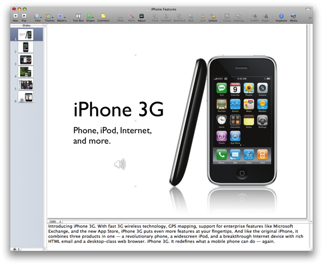
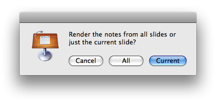
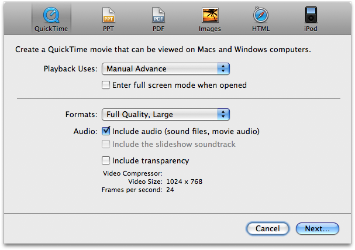

Add Picture Slides to Presentation
Creating a high-quality narrated slideshow for the Web just became as easy as dragging your tagged photos onto a small AppleScript script application.

The Add Images to Slideshow droplet will add image files, dragged onto its icon, to a Keynote slideshow. If there is no open Keynote slideshow, one will be created.
Any IPTC captions, embedded into an image file, will be extracted from the file, added to the slide’s presenter notes, and then rendered to disk as a spoken audio file using the built-in Mac OS X text-to-speech architecture.
Each audio clip is automatically imported into its corresponding slide, and the audio source files will be created in the same folder as the slideshow. If the slideshow has not yet been saved, the audio files will be created in the Music folder instead.
Once the script has completed processing the dragged-on image files, it will select the first slide added and begin playing the slideshow. When the audio clip for the slide has completed, use the right-arrow key to advance to the next slide.
Render Slides Script
If your images do not have embedded captions or you should want to enter and/or edit the speaker notes to be used as the source for audio clips, the Render Slide Notes to Audio File script is installed with the example files. Run this script from the Script Menu to convert speaker notes, for either the current slide or all slides, into spoken audio clips will be automatically imported into your presentation.

Export for the Web
Narrated slideshows are perfect for posting as web-based instructional or marketing materials. Choose Export from the Share menu in Keynote and then select QuickTime as the export format. Be sure to check the optional for including the created audio clips in the finsihed Flash file. Click here to watch the example. Once the narration for the first slide has completed, click the play button to proceed to the next one in the presentation. You can start the presentation from the beginning by reloading its containing webpage or using the movie controller.

Download the script and example files
You can download the example installer here.